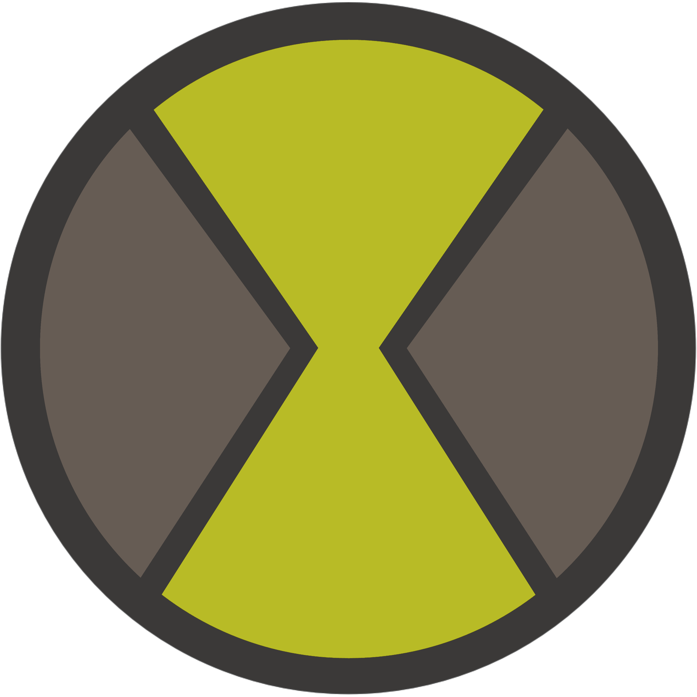

syswraith
github discord
I like coffee and tea. I like gruvbox and other toned-down themes. I hate ads and trackers. I use vim and vscode. I like to think of myself as an ideator.
I know enough javascript to crack test portals and enough bash to comfortably live in the safety of the commandline. Python and C++ are a work in progress.
:smile